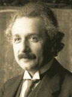
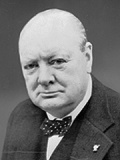

Albert Einstein, 14.03.1879 - 18.04.1955
Deutscher Physiker und Nobelpreisträger
Mehr als die Vergangenheit interessiert mich die Zukunft,
denn in ihr gedenke ich zu leben.
Mehr >>>>

Winston Churchill, 30.11.1874 - 24.01.1965
Britischer Politiker und Nobelpreisträger
Es ist ein großer Vorteil im Leben, die Fehler,
aus denen man lernen kann, möglichst früh zu begehen.
Mehr >>>>

Charlie Chaplin, 16.04.1889 - 25.12.1977
Englischer Schauspieler
Jeder Tag, an dem du nicht lächelst, ist ein verlorener Tag